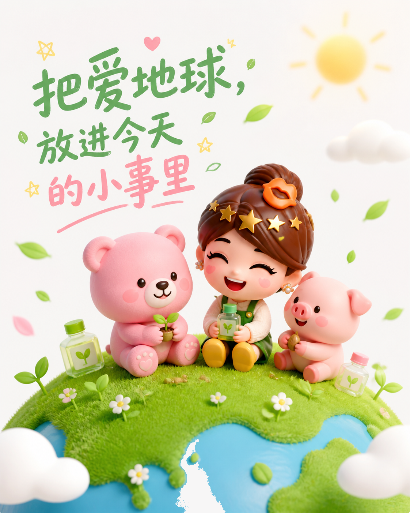
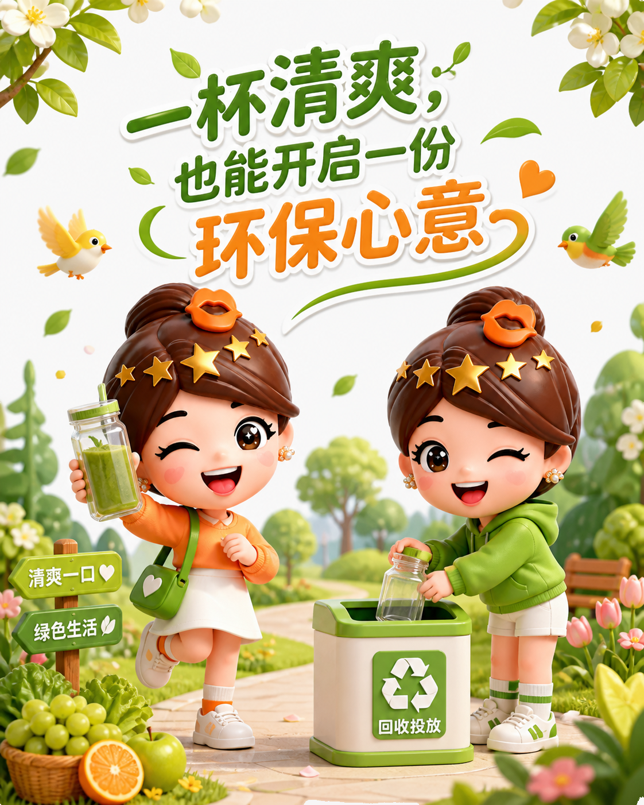
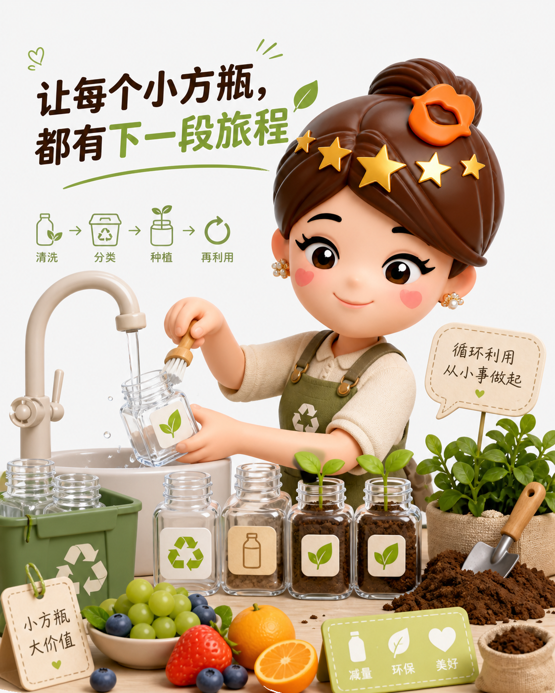
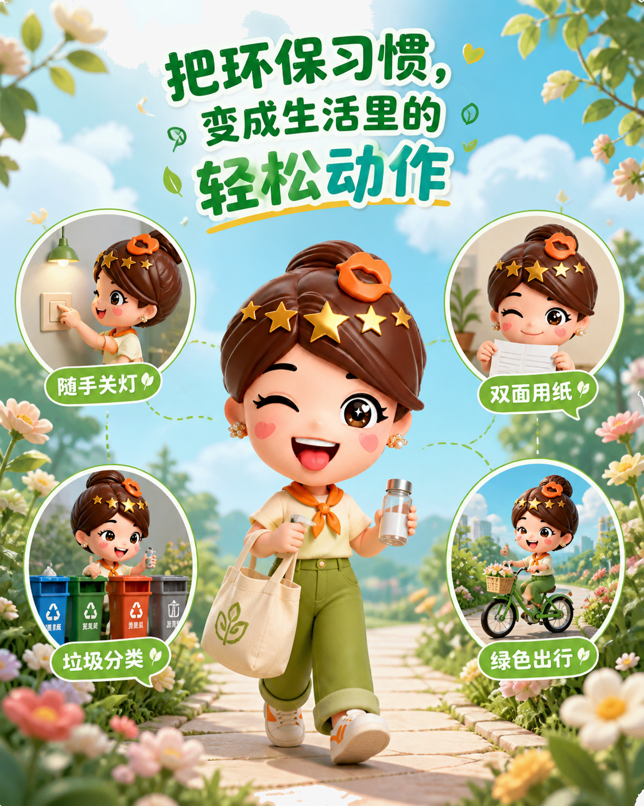
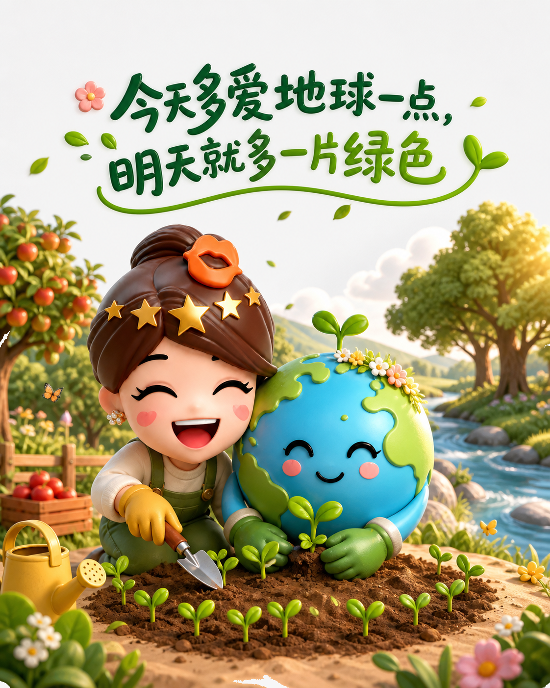

把环保放回日常：一只小方瓶的绿色旅程
环保，先从一个顺手动作开始
一次春日联动，把饮品、角色和地球日放进同一个故事。环保不必宏大，先从喝完之后开始。

留下空瓶，清洗、分类，再让它成为种植容器，让消费多出一段旅程。

让重复使用变得具体
关灯、双面用纸、分类、绿色出行，都是今天的选择。重用小方瓶，也是在减少浪费。


今天多做一点，明天就多一片绿色
地球日不只是提醒。少一次丢弃，多一次循环使用；今天多爱一点，明天就多一片绿色。
